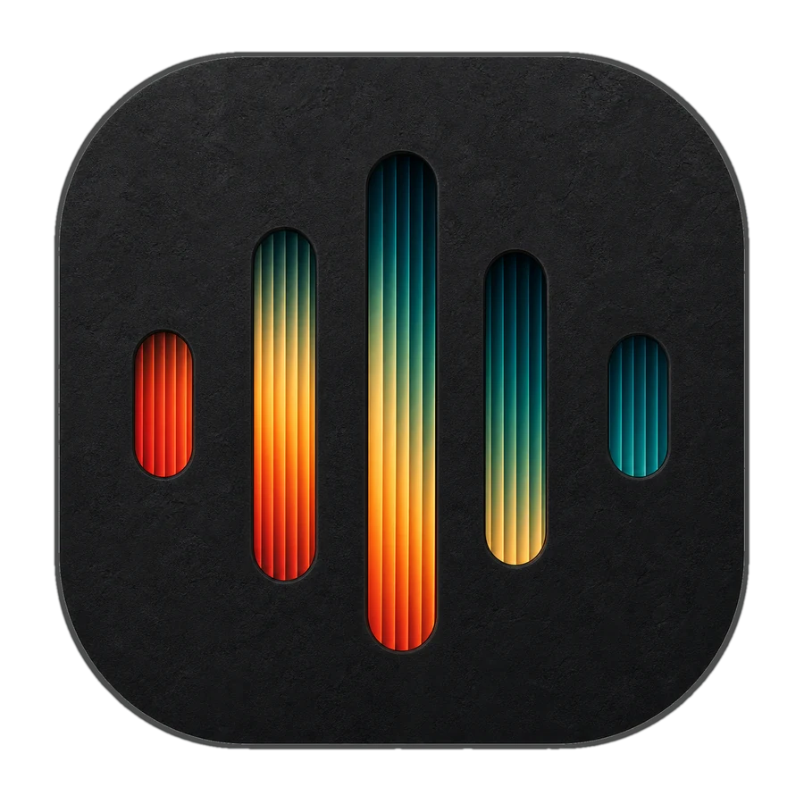
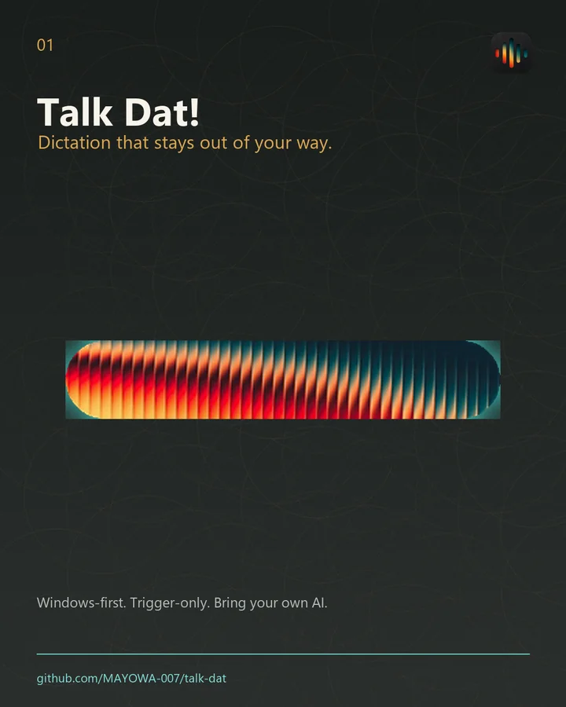
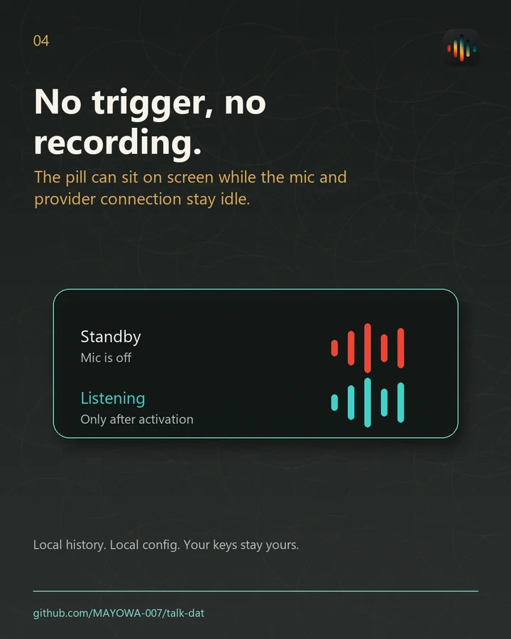
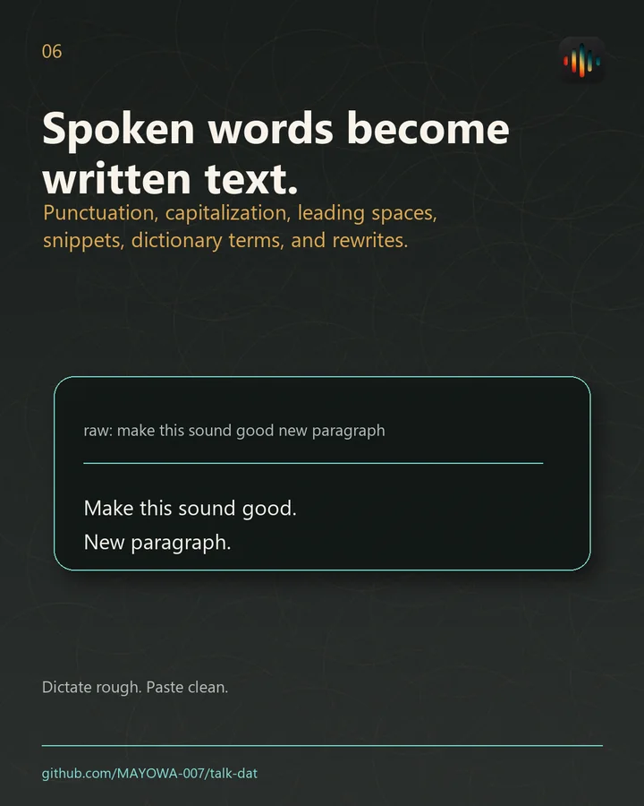

No trigger, no recording.
The Pill can remain visible while the microphone, provider connection, and usage billing remain idle. Hold-to-talk ends when you release; hands-free is always an explicit separate action.
Hold. Speak. Paste clean text anywhere on Windows. A tiny trigger-only dictation surface with local voice-session protection and your choice of speech model.

This is a functioning browser transcription preview, not a canned animation. Hold the button, speak, and release. The Windows app adds global hotkeys, automatic insertion, protected recordings, local models, and richer formatting.
Nothing records until you hold or toggle. Release always stops hold-to-talk.
Browser preview: audio is handled by the active speech service and is never saved by this page. The installed app can use its bundled local model without an API key. Deepgram preview activates only through a short-lived server token; the project key is never sent to this page.
The installer creates the app shortcut, keeps updates inside Talk Dat!, and preserves your private local settings between releases. New users can start with the bundled local model or add their own cloud provider.
The recommended installer for 64-bit Windows 10 and 11. The current public beta is unsigned, so Windows SmartScreen may ask you to confirm the publisher before installation.
Download verified installerFinding the newest verified Windows build...
Full overlay, global hotkeys, auto-paste, local history, protected voice sessions, updater, local and cloud speech routes.
AvailableNative hotkeys, accessibility permissions, menu-bar behavior, signing, and notarization still require implementation and physical-device verification.
PlannedX11 and Wayland need separate overlay, shortcut, tray, and simulated-input verification before a public package is honest.
PlannedTalk Dat! is a local Windows interaction tool, not a cloud account or remote audio archive. The desktop contract remains small, explicit, and recoverable.
The Pill can remain visible while the microphone, provider connection, and usage billing remain idle. Hold-to-talk ends when you release; hands-free is always an explicit separate action.
Each accepted voice session is written locally before transcription, formatting, clipboard, or insertion can fail. History can replay or recover the protected recording instead of silently losing a long thought.
New users can run the bundled no-key local route. Deepgram Nova-3, OpenAI, ElevenLabs, AssemblyAI, Gemini, Groq, Mistral, Soniox, xAI, Smallest.ai, and compatible endpoints remain user-selectable.
Punctuation, capitalization, leading spaces, dictionary terms, snippets, conservative cleanup, explicit transforms, local history, and scratchpad tabs continue after transcription lands.



Download the Windows public beta, choose local speech or connect your provider, then hold Ctrl + Windows whenever you want to write.
Download Talk Dat!